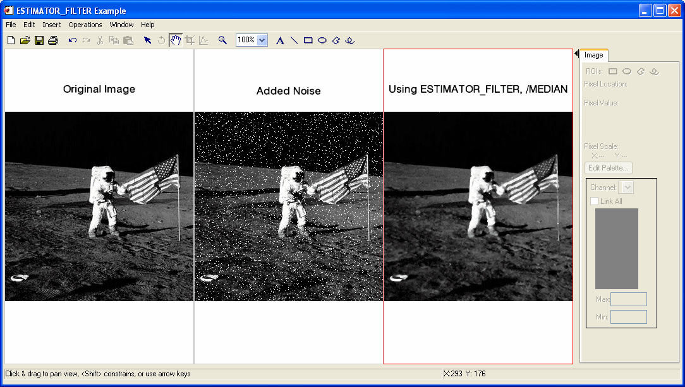

The ESTIMATOR_FILTER function applies an order statistic noise-reduction filter to a one-channel image.
For each pixel in the image, the estimator filter analyzes the neighboring pixels. The order statistic estimator is computed for this neighborhood and the pixel is replaced by the result.
This routine is written in the IDL language. Its source code can be found in the file estimator_filter.pro in the lib subdirectory of the IDL distribution.
Result = ESTIMATOR_FILTER( ImageData , Width [, Height ] [, INVALID = value ] [, / MEDIAN ] [, / MIDPOINT ] [, MISSING = value ] [, / NAN ] [, TRUNCATE = value ] )
Returns an array containing the filtered image, which has the same dimensions and type as ImageData .
A two-dimensional array containing the pixel values of the input image.
The width of the two-dimensional neighborhood. Since the neighborhood is centered on a pixel, this value must be an odd, positive integer.
The height of the two-dimensional neighborhood. Since the neighborhood is centered on a pixel, this value must be an odd, positive integer. If this value is omitted, Height is set to Width , resulting in a square neighborhood.
Set this keyword to a scalar value of the same type as ImageData that should be used to indicate missing or invalid data within ImageData . Missing data are ignored when computing the mean of an element’s neighborhood. In Result , missing elements are replaced by the mean of all other valid points within that element’s neighborhood.
Tip: The INVALID keyword has the same effect as the NAN keyword, but is useful for byte or integer data which have missing values.
Note: The INVALID keyword uses a simple comparison to ignore values and should not be set to NaN. For floating-point data, you can use the INVALID and NAN keywords simultaneously to filter out both user-defined values and NaN or Infinity values.
Set this keyword to replace a pixel with the neighborhood median value. Using the median value reduces unipolar and bipolar impulse noise (also known as salt-and-pepper noise) without introducing blur.
For S x,y , the m x n neighborhood surrounding the pixel ƒ( x , y ), the median pixel is given by:
Set this keyword to replace a pixel with the neighborhood midpoint value. Using the midpoint estimator reduces Gaussian noise.
For S x,y , the m x n neighborhood surrounding the pixel ƒ( x , y ), the midpoint pixel is given by:
Set this keyword to the value that will be substituted for missing data. This keyword is used only if the INVALID or NAN keyword is set.
Set this keyword to check for occurrences of the IEEE floating-point values NaN or Infinity in the input data. Pixels with the value NaN or Infinity are treated as missing data. Missing data are ignored when computing the mean of an element’s neighborhood. In Result , missing elements are replaced by the mean of all other valid points within that element’s neighborhood.
Note: ESTIMATOR_FILTER should never be called without the NAN keyword if the input array may possibly contain NaN or Infinity values.
Set this keyword to a value between 0 and 100 that represents the percentage of total data to be trimmed from the truncated (or alpha-trimmed) mean of each neighborhood.
If d is the keyword value, the filter trims the d/2 % largest and d/2 % smallest values and calculates the mean of the remaining neighborhood values. If d =0, this filter is equivalent to the arithmetic mean filter; if d =100, this filter is equivalent to the median estimator filter.
For S′ x,y , the m x n neighborhood surrounding the pixel ƒ( x , y ) with the d/2 % largest and smallest values removed from S x,y , the truncated mean is given by:
In the following example, we add some unipolar impulse (salt) noise to an image and filter it with ESTIMATOR_FILTER, using the MEDIAN keyword.
First, we read the file and add noise to the image:
; Read the PNG file
file = FILEPATH('moon_landing.png', SUBDIR=['examples','data'])
imageOriginal = READ_PNG(file)
; Generate some unipolar impulse (salt) noise
noise = RANDOMN(SYSTIME(/SECONDS), 300, 300, /UNIFORM)
noise[WHERE(noise LE .95)] = 0
noise[WHERE(noise GT .95)] = 255
imageNoise = imageOriginal+noise < 255 > 0
; Filter with 3x3 median filter
imageFiltered = ESTIMATOR_FILTER(imageNoise, 3, /MEDIAN)
Next, we render the result:
; Find the image dimensions so we can display three of them
; side by side in an iImage iTool
dims = [(SIZE(imageOriginal))[1]*3, $
(SIZE(imageOriginal))[2]*1+120]
; Display the original, noise-added, and filtered images
IIMAGE, imageOriginal, VIEW_GRID=[3,1], $
VIEW_TITLE='Original Image', $
DIMENSIONS=dims, WINDOW_TITLE='ESTIMATOR_FILTER Example', $
/NO_SAVEPROMPT
IIMAGE, imageNoise, /VIEW_NEXT, VIEW_TITLE='Added Noise'
IIMAGE, imageFiltered, /VIEW_NEXT, $
VIEW_TITLE='Using ESTIMATOR_FILTER, /MEDIAN'
; Increase the text size
ISETPROPERTY, 'text*', FONT_SIZE=36

Filtered Image using ESTIMATOR_FILTER, /MEDIAN
In the following example, we add some uniform noise to an image and filter it with ESTIMATOR_FILTER, using the MIDPOINT keyword.
; Read the PNG file
file = FILEPATH('moon_landing.png', SUBDIR=['examples','data'])
imageOriginal = READ_PNG(file)
; Generate some uniform noise
noise = randomn(SYSTIME(/SECONDS), 512, 512, /UNIFORM)*150
noise = FIX(noise-75)
imageNoise = imageOriginal + noise < 255 > 0
; Filter with 3x3 midpoint filter
imageFiltered = ESTIMATOR_FILTER(imageNoise, 3, $
/MIDPOINT)
; Find the image dimensions so we can display three of them
; side by side in an iImage iTool
dims = [(SIZE(imageOriginal))[1]*3, $
(SIZE(imageOriginal))[2]*1+120]
; Display the original, noise-added, and filtered images
IIMAGE, imageOriginal, VIEW_GRID=[3,1], $
VIEW_TITLE='Original Image', $
DIMENSIONS=dims, WINDOW_TITLE='ESTIMATOR_FILTER Example', $
/NO_SAVEPROMPT
IIMAGE, imageNoise, /VIEW_NEXT, VIEW_TITLE='Added Noise'
IIMAGE, imageFiltered, /VIEW_NEXT, $
VIEW_TITLE='Using ESTIMATOR_FILTER, /MIDPOINT'
; Increase the text size
ISETPROPERTY, 'text*', FONT_SIZE=36
In the following example, we add a mixture of uniform noise and unipolar impulse noise to an image and filter it with ESTIMATOR_FILTER, using the TRUNCATE keyword.
First, we read the file and add noise to the image:
; Read the PNG file
file = FILEPATH('moon_landing.png', SUBDIR=['examples','data'])
imageOriginal = READ_PNG(file)
; Generate a mixture of uniform noise and unipolar impulse noise
noise = randomn(SYSTIME(/seconds), 512, 512, /UNIFORM)
noise[WHERE(noise GT .98)] = 255
noise[WHERE(noise LE .98)] *= 75
imageNoise = imageOriginal + noise < 255 > 0
; Filter with a 50% 3x3 truncated mean filter
imageFiltered = ESTIMATOR_FILTER(imageNoise, 3, $
TRUNCATE=50)
Next, we render the result:
; Find the image dimensions so we can display three of them
; side by side in an iImage iTool
dims = [(SIZE(imageOriginal))[1]*3, $
(SIZE(imageOriginal))[2]*1+120]
; Display the original, noise-added, and filtered images
IIMAGE, imageOriginal, VIEW_GRID=[3,1], $
VIEW_TITLE='Original Image', $
DIMENSIONS=dims, WINDOW_TITLE='ESTIMATOR_FILTER Example', $
/NO_SAVEPROMPT
IIMAGE, imageNoise, /VIEW_NEXT, VIEW_TITLE='Added Noise'
IIMAGE, imageFiltered, /VIEW_NEXT, $
VIEW_TITLE='Using ESTIMATOR_FILTER, /TRUNCATE'
; Increase the text size
ISETPROPERTY, 'text*', FONT_SIZE=36
|
7.1 |
Introduced |
“Overview of Image Processing” (
Image Processing in IDL
) in the
help/pdf
directory of your IDL installation,
MEAN_FILTER
,
BANDPASS_FILTER
,
BANDREJECT_FILTER
,
WIENER_FILTER
,
LEAST_SQUARES_FILTER